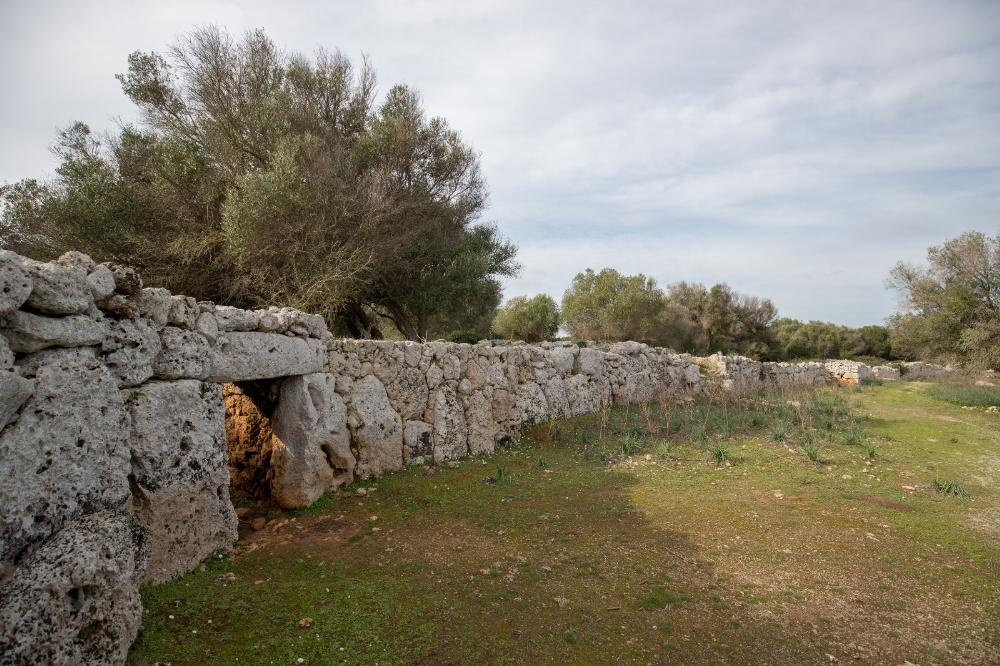
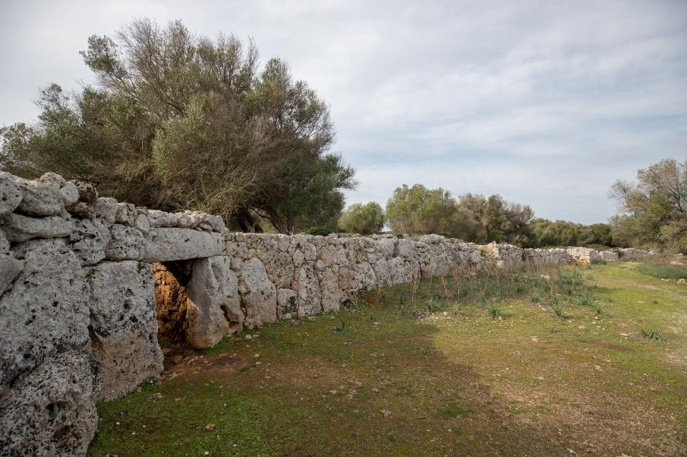

És un dels poblats talaiòtics més gran de les Illes Balears i l’únic que conserva intacta la seva muralla, que envolta la major part del poblat. Tot i que els orígens del poblat es remunten a l’edat del Bronze, Son Catlar va adquirir una importància principal poc abans de la conquesta romana.
 

Editat per darrera vegada el